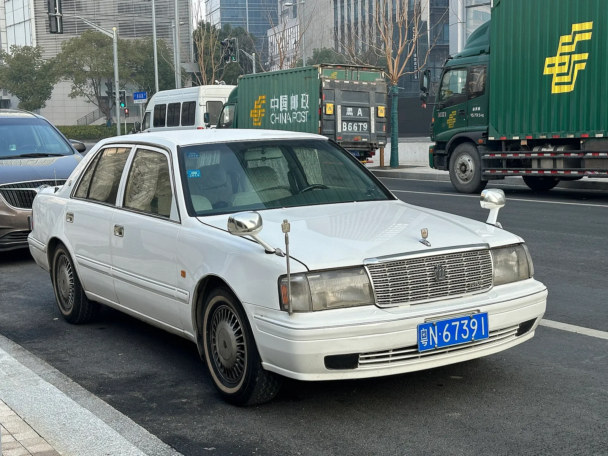

▲ 크라운 크로스오버. 세단도 SUV도 아닌 형태가 판매의 발목을 잡았다 ⓒ Wikimedia Commons
토요타 크라운의 미국 판매가 줄고 있습니다. 출시 첫 2년 연 1만9,000대 수준에서 지난해 1만2,309대가 됐습니다.
가장 강력한 경쟁자는 같은 회사 캠리입니다. 캠리는 2026년 상반기에 전년 대비 15% 이상 늘었습니다.
그런데 이 승부를 가른 결정적 숫자는 성능도 가격도 아닙니다.
1. 422대 대 1만6,246대
이 조사에서 가장 눈에 띄는 숫자입니다. 미국 전국에서 살 수 있는 크라운이 422대, 캠리가 1만6,246대입니다.
| 영향 | 내용 |
|---|---|
| 선택 폭 | 422대 중에서는 원하는 색·트림을 고르기 어렵다 |
| 가격 협상 | 재고가 적으면 할인이 없다 |
| 시승 기회 | 매장에 실물이 없으면 비교 대상에서 빠진다 |
| 대기 | 주문 생산 시 인도까지 시간이 걸린다 |
세 번째 항목이 특히 큽니다. 자동차 구매는 대체로 매장에서 실물을 본 뒤 결정됩니다. 크라운을 보러 갔는데 없고 캠리가 20대 서 있다면, 결론은 대체로 정해집니다.
재고가 적은 이유는 판매가 적어서일 수도, 공급이 적어서일 수도 있습니다. 어느 쪽이든 결과는 같은 방향으로 작동합니다. 적게 들여오니 덜 팔리고, 덜 팔리니 더 적게 들여옵니다.
2. 5,000달러를 더 내고 얻는 것
| 모델 | 가격 | 출력 | 연비(복합) |
|---|---|---|---|
| 캠리 기본형 | 29,600달러 | 225마력(FWD) | 43~51mpg |
| 캠리 XLE AWD | 36,325달러 | 232마력(AWD) | |
| 크라운 XLE | 41,440달러 (+1,295 탁송) | 236마력 | 최고 41mpg |
| 크라운 플래티넘 | 55,965달러 | 340마력 | 30mpg |
기본 트림끼리 비교하면 크라운이 4마력 앞섭니다. 236마력 대 232마력입니다. 5,000달러를 더 내고 얻는 출력 차가 4마력입니다.
연비는 오히려 캠리가 낫습니다. 43~51mpg 대 최고 41mpg입니다.
340마력 플래티넘은 이야기가 다릅니다. 다만 5만5,965달러입니다. 이 가격대에서는 렉서스 ES가 시야에 들어옵니다.

▲ 캠리 XLE AWD는 3만6,325달러에 232마력, 복합 43~51mpg다
3. 실내는 크라운이 넓은가
| 항목 | 우위 | 차이 |
|---|---|---|
| 전장 | 크라운 | +2.6인치 |
| 휠베이스 | 크라운 | +1.0인치 |
| 전고 | 크라운 | +3.7인치 |
| 지상고 | 크라운 | +0.4인치 |
| 2열 레그룸 | 크라운 | +0.9인치 |
| 어깨 공간 | 캠리 | 앞뒤 각 +0.6인치 |
| 2열 힙룸 | 캠리 | +1.5인치 |
크라운이 길고 높습니다. 전고 3.7인치(약 9.4cm) 차이가 가장 큽니다. 승하차가 편하고 시야가 높습니다.
다만 좌우 공간은 캠리가 넓습니다. 특히 2열 힙룸이 1.5인치(약 3.8cm) 더 넓습니다. 뒷좌석에 세 명이 앉을 때 체감되는 항목입니다.
크라운은 위로 키우고 캠리는 옆으로 넓은 구조입니다. 가족용으로는 캠리 쪽이 유리할 수 있습니다.
4. 5년 뒤에 갈리는 것
| 항목 | 크라운 | 캠리 |
|---|---|---|
| 5년 감가율 | 51% | 36% |
| 5년 정비비 | 1,662달러 | 1,503달러 |
정비비는 159달러 차이로 거의 같습니다. 같은 회사, 비슷한 파워트레인이니 예상되는 결과입니다.
감가율은 15%p 차이입니다. 4만1,440달러짜리 크라운이 5년 뒤 약 2만300달러가 되고, 3만6,325달러짜리 캠리는 약 2만3,250달러가 남습니다.
즉 5,000달러 비싸게 산 차가 5년 뒤에는 3,000달러 싸집니다. 실질 부담 차이는 8,000달러 이상으로 벌어집니다.
감가율이 높은 이유는 결국 수요입니다. 중고 시장에서 찾는 사람이 적으면 값이 빨리 내려갑니다. 신차 재고 422대라는 숫자가 여기서도 작동합니다.

▲ 5년 감가율은 크라운 51%, 캠리 36%로 15%p 차이가 난다
5. 크라운은 무엇인가
크라운은 일본에서 1955년부터 이어져 온 이름입니다. 토요타에서 가장 오래된 모델명이고, 일본 내수에서는 고급 세단의 대명사였습니다.
미국에서는 사정이 다릅니다. 보도가 지적한 문제 중 하나가 브랜드 인지도 부족입니다. 미국 소비자에게 크라운은 처음 듣는 이름에 가깝습니다.
| 요인 | 내용 |
|---|---|
| 형태 | 세단도 SUV도 아닌 크로스오버 세단 — 분류가 애매하다 |
| 인지도 | 미국에서 이름의 역사가 없다 |
| 가격대 | 캠리 위, 렉서스 ES 아래 — 사이에 끼었다 |
| 재고 | 422대 — 보고 싶어도 볼 수 없다 |
| 감가 | 51% — 되팔 때 손해가 크다 |
세 번째 항목이 구조적입니다. 토요타에는 이미 캠리가 있고 위에는 렉서스 ES가 있습니다. 그 사이를 메우는 모델은 양쪽에서 잠식당하기 쉽습니다.

▲ 1990년대 크라운. 일본에서는 1955년부터 이어진 고급 세단의 대명사였다
6. 국내에는 어떤 의미인가
크라운은 국내에도 판매됩니다. 다만 국내 시장에서도 비슷한 구조적 문제를 안고 있습니다.
그랜저와 K8이 버티는 준대형 시장에서, 크라운은 가격대가 위에 있습니다. 그 위에는 제네시스 G80이 있습니다. 미국에서 캠리와 렉서스 ES 사이에 낀 것과 같은 구도입니다.
이 기사가 국내 독자에게 주는 실질적 교훈은 감가율입니다. 5년 51%와 36%의 차이는 차값의 15%입니다. 신차 가격표만 비교하면 놓치는 금액입니다.
7. 정리
토요타 크라운의 미국 판매가 초기 연 1만9,000대 수준에서 지난해 1만2,309대로 줄었습니다. 같은 기간 캠리는 2026년 상반기 15% 이상 늘었습니다.
가장 결정적인 숫자는 재고입니다. 전국에서 살 수 있는 크라운이 422대, 캠리가 1만6,246대입니다. 실물을 볼 수 없는 차는 비교 대상에서 빠집니다.
가격은 크라운 XLE 4만1,440달러, 캠리 XLE AWD 3만6,325달러로 5,000달러 이상 차이 나는데 출력은 236마력 대 232마력이고 연비는 캠리가 낫습니다. 5년 감가율은 51% 대 36%입니다.